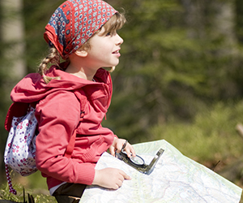

Why Spring Camping is Great for Families
In This Article: Prepare for Cool Days Stay Warm at Night
There are few things better than getting outdoors to enjoy the springtime wonders of blooming flora and active wildlife after being indoors for much of the cold winter months. With snowmelt from the mountains filling rivers and streams, spring is a great season for fishing and bird watching. You can enjoy the charms of spring firsthand by taking your family on a spring camping trip.
As spring is considered the off-season for camping before the busy summer months, camping in the spring means less crowds and cooler weather. Many campgrounds do not reach their maximum capacity, so you do not have to worry about finding a site at an open campground or making reservations months in advance. You can pack up the car and take the kids on a spring break camping trip to teach them more about nature or have a fun family camping trip over Easter weekend complete with an outdoor Easter egg hunt. In addition to fewer crowds of people, there are also up to 70% fewer mosquitoes and insects. Bug season does not usually start until the warmer months so you can bring along much less bug repellant.
Prepare for Cool Days
Weather in the spring can be variable so it is always good to hope for the best but prepare for the worst. It is important to plan ahead for warm, sunny spring days and also cold, rainy days. When it is cool and dry, keep the kids entertained and warm by doing fun, athletic activities such as hiking or biking. Bring along board games and cards and prepare to spend rainy days with the family in the tent while you listen to the rain come down. The following essentials and tips will help keep your family warm, comfortable and safe in the outdoors:
- As spring weather is unpredictable, your supplies should be waterproof or stored in water-resistant containers.
- While outside, wear layers of water-resistant and breathable clothing. Start with thermal underwear or a moisture-wicking baselayer and then add an insulating thermal or wool layer. A waterproof jacket should be worn as an outerlayer to keep you warm and dry. By dressing in layers, you can add or remove layers of clothing as needed.
- If temperatures are near or below freezing, a beanie and possibly a ski mask are essential for warmth. You lose body heat rapidly through your head so it is important to keep your head and face well covered.
- For families that plan to hike, everyone should have waterproof footwear that is suitable for hiking. As wet weather means muddy trails, your hiking shoes should have decent traction.
- For safety, bring along a first aid kit for unpredictable mishaps on the trail and a whistle to scare off unexpected wildlife.
- Walkie talkies or two-way radios are useful when cell service is unavailable. If you plan to go backcountry camping, make sure your radio is equipped with NOAA so you are notified of severe weather or emergency warnings.
Stay Warm at Night
While weather in the daytime can be unpredictable, conditions at night will be invariably cold as the temperature drops when the sun goes down. Not having the right gear and shivering through the night in your tent will create unwanted memories. Instead, be prepared to have a comfortable night’s rest by bringing along the following essential gear:
- A sleeping bag with a temperature rating that is several degrees lower than the lowest temperature you expect to encounter. It is always better to have a sleeping bag that will keep you too warm rather than a sleeping bag that will not keep you warm enough. If you get too warm, you can simply unzip the sleeping bag.
- A foam mat or air mattress to put under your sleeping bag for comfort and as an additional barrier between you and the cold ground. If your foam mat or air mattress is not very thick, you can bring along an additional one for added protection from the cold ground.
- A tarp to put over the tent to protect the tent from the rain and an additional tarp under the tent to prevent the wetness of the ground from getting your foam mat, air mattress or sleeping bag wet.
- Also, consider bringing along a portable propane heater to warm the tent while you tell your kids stories and get ready for bed. Before using a propane heater, be sure to read the instructions and do not leave the heater on while you sleep.
Related Articles
Resources
Other Articles
Related Categories